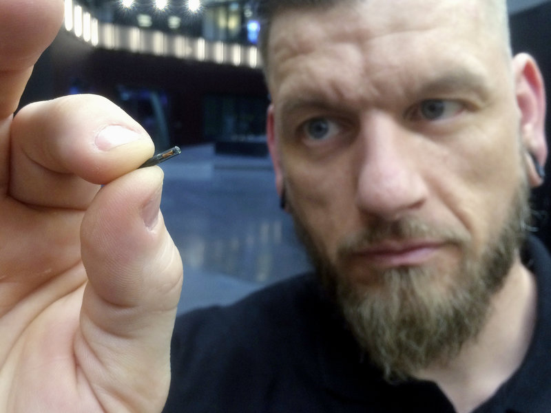

Trump: 'You know what I am? I'm a nationalist'
Trump 'not satisfied' after talk with Saudi leader MBS...
Erdogan: Saudis plotted writer’s killing for days...
Khashoggi’s body parts reportedly found in Saudi consul general’s garden
Bible Museum says five of its Dead Sea Scrolls are fake
Ex-LGBT Freedom Marchers to Testify to Holy Spirit's Transforming Power in Los Angeles
Sen. Sasse warns: ‘The perfect storm of deepfakes’ is coming...
Twitter bans more InfoWars accounts...
Kruger responds to Stanley: Why We Can’t 'Unhitch' from the Old Testament...
Judge Orders Avenatti to Pay Former Law Partner $4.85 Million
Conservatism as the New Counterculture...
Trump says U.S. to exit nuclear treaty, Russia warns of retaliation...
Why Is Kim Jong Un So Afraid of Christianity?

Progressive 'Faith Leaders' to Ask for God’s Blessing on Planned Parenthood Abortion Clinic
500 people saved by abortion pill reversal
Obama takes credit for economy again, says 'I believe in a fact-based reality'
Trump Admin May Restore Legal Definition of Sex
No, Not ‘Dehumanizing’ Trans Americans...
England: Poll Finds Support for ‘Self-Declaration’ of Race, Age, Species
Explosive device found near George Soros’ home...
'Boulder' thrown through Rep. Kevin McCarthy’s office window...
MacArthur to Step Aside as Master’s University President
’The Creepy Line’ Documentary Explores How Google and Facebook Can Undermine Democracy
Trump approval jumps ahead of Obama’s midterm approval rating
Bernie casts doubt on blue wave: 'I don't believe it'

Thousands Of Swedes Are Inserting Microchips Under Their Skin
Nigeria: 55 dead in fighting between Christians and Muslims...
The Attack on Faith-Based Adoption Agencies
Police chief cleared after falsely accused of rape
Legalized marijuana linked to a sharp rise in car crashes...